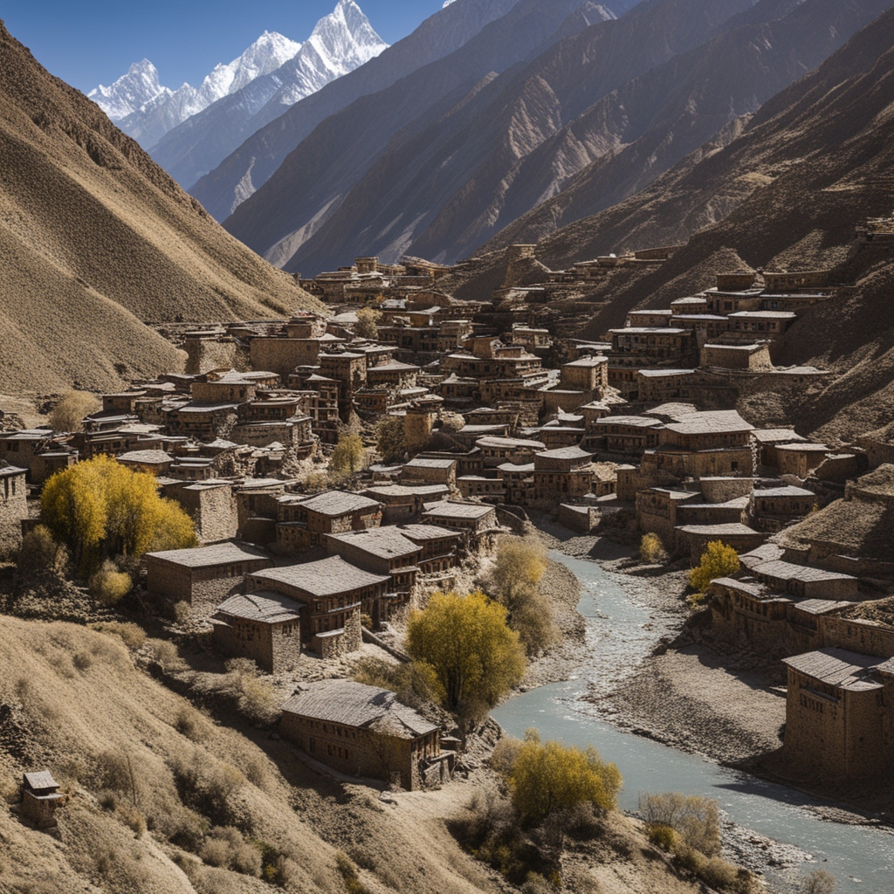
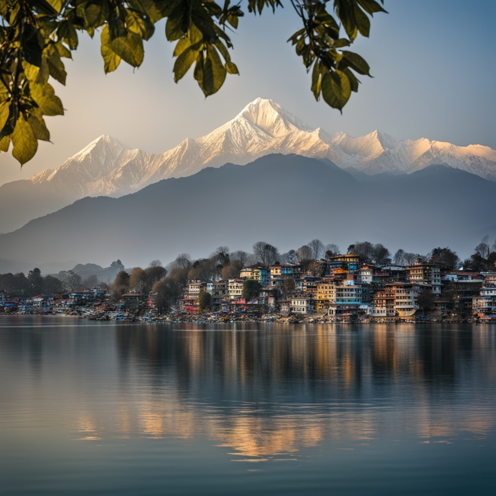

Greetings, travelers ! Get ready for the escapade of a lifetime.
Our journey began in the early morning in Butwal. My friend and I hopped on our bike, filled with excitement. As we rode through the scenic roads of Palpa, we stopped for a quick coffee. It was terrible, but the view was worth every bitter sip. By 9 a.m., we reached Pokhara and had breakfast. We took a short rest to recharge. We searched a gas station (Petrol Pump) and made our bike's tank full. Then we continued our journey towards Tatopani. We arrived there in the late evening. Tatopani is famous for its hot springs, so we tried the soothing hot water bath. We also met a friendly dog and her puppy, which added some joy to our evening. !
We hit the road early again, but this time the weather wasn’t on our side. It was raining, and the roads were muddy and challenging. Despite this, we made it to Jomsom, where we enjoyed some fresh apples. From there, we continued to the Muktinath Temple. The temple was stunning, and the journey there was equally beautiful, despite the strong winds. At Muktinath, we bathed under the 108 taps (dharas) and in the two sacred ponds (kundas). We took some photos, offered our prayers, and then we returned back to Jomsom, where we stayed for the night.
One the fourth day we returned back to pokhara and enjoyed the beautiful places of pokhara and we also tried the famous grilled fish of majhikuna which is a famous place in pokhara for the grilled fish . We went to almost every beautiful place in pokhara but I am Feeling bore to write so consider it by remembering which are the top places in pokhara to visit (Actually we had been to upper mustng and Nepal-China border but I am just skipping those parts cuz I don't have enough time for now to explain the whole journey to lomanthang , choreng and china border so only this much for now...hahaa)
Returned Home Late night (Other Part will be available within a unknown time-period)
And now, some travel humor:
"Because they always find their path—just like they find Wi-Fi signals on mountain peaks, mysteriously strong and with a breathtaking connection!".
Because no matter how hard you try, they always leave a path!